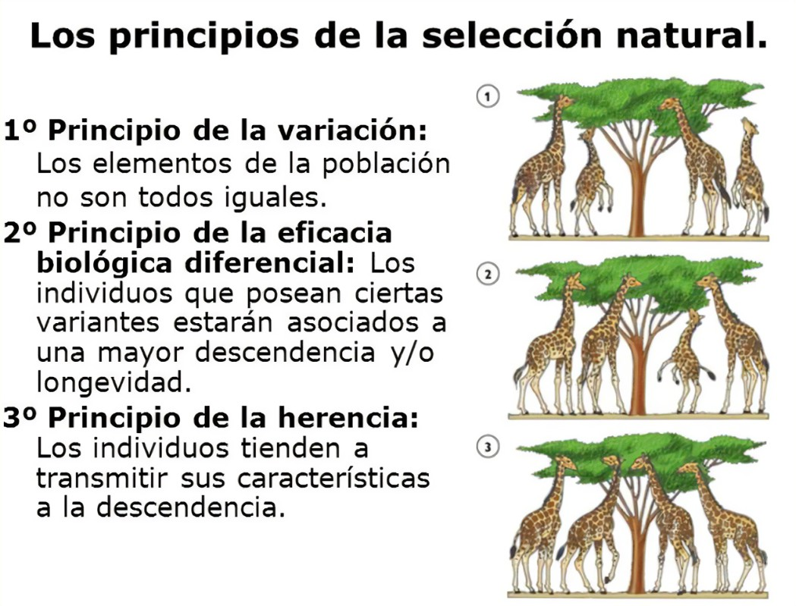

La teoría de la evolución, propuesta por Charles Darwin en el siglo XIX, transformó nuestra comprensión de la biología y el origen de las especies. Sin embargo, la evolución no es un concepto estático; ha evolucionado tanto como los organismos que describe. Desde la selección natural hasta los avances en genética molecular, la evolución se ha enriquecido con nuevas ideas y descubrimientos que continúan desafiando y expandiendo la visión que teníamos sobre la vida en la Tierra.
-
La Selección Natural: Fundamentos y Descubrimientos Clásicos

La selección natural es el proceso por el cual los organismos mejor adaptados a su entorno tienen más probabilidades de sobrevivir y reproducirse, transmitiendo sus características a la siguiente generación. Este concepto, aunque básico, sigue siendo central para entender la evolución. Sin embargo, la visión moderna de la selección natural no es tan simple como la propuesta por Darwin.
El trabajo de Darwin fue revolucionario porque unificó la diversidad de especies con un mecanismo plausible: las especies no son inmutables, sino que cambian a lo largo del tiempo mediante procesos naturales. Sin embargo, a medida que la biología molecular se desarrolló, entendimos que la variabilidad genética que impulsa la selección natural no solo depende de las características observables, sino también de mutaciones y recombinaciones a nivel del ADN. -
La Evolución Molecular: Descifrando el Código Genético
Uno de los avances más significativos en la comprensión de la evolución ha sido la identificación y el análisis de los mecanismos genéticos que subyacen a la variabilidad. La revolución genética comenzó con la descripción de la estructura del ADN por Watson y Crick en 1953, pero fue el Proyecto del Genoma Humano (1990-2003) el que consolidó nuestra capacidad para estudiar los genomas de diversas especies, desde bacterias hasta humanos. A través de la comparación de secuencias genéticas, los científicos han identificado los genes conservados y los cambios evolutivos que ocurren a lo largo de millones de años. Esto ha permitido la creación de "árboles evolutivos" más precisos y detallados, revelando que todas las formas de vida comparten ancestros comunes en diferentes momentos de la historia de la Tierra. -
La Evolución de la Especiación: Un Proceso Diverso y Complejo
Otro aspecto clave de la evolución es la especiación, el proceso mediante el cual una especie se divide en dos o más especies diferentes. Este fenómeno se puede estudiar bajo diferentes contextos, como la especiación alopátrica, que ocurre cuando grupos de una población quedan aislados geográficamente, y la especiación simpátrica, que puede ocurrir sin aislamiento geográfico, como es el caso de algunos organismos que experimentan cambios genéticos repentinos, como duplicaciones cromosómicas.
La especiación también puede ser influenciada por factores como la deriva genética, la selección sexual y la presión ambiental. Cada tipo de especiación pone de relieve la complejidad del proceso evolutivo, que no es solo una simple consecuencia de la adaptación al medio, sino también de interacciones genéticas, comportamentales y ambientales. -
Evolución Rápida y Adaptaciones Recientes
La evolución no siempre es un proceso lento. En la actualidad, estamos viendo ejemplos de evolución rápida en organismos como las bacterias y los virus. Estos organismos pueden desarrollar resistencia a los antibióticos o a los antivirales en un tiempo extremadamente corto debido a mutaciones aleatorias y la presión selectiva generada por el uso de medicamentos.
Además, el cambio climático y la intervención humana están acelerando el proceso evolutivo en muchas especies. Por ejemplo, los cambios en los ecosistemas debido a la deforestación, la contaminación o la introducción de especies invasoras están provocando adaptaciones rápidas en la fauna y flora.